Artwork: Dan Nowakowski/Nicholas Taylor
The bacterial flagellar engine has an automatic gearshift
Navish Wadhwa
Harvard University
Machines perform specific tasks for us
Cells use molecular machines for specific tasks
 ATP synthase
ATP synthase
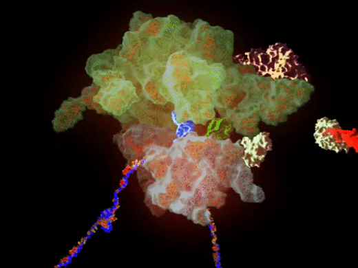 Ribosome
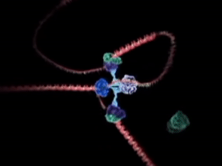 Replisome
Do cells have smart machines too?
Yes, they do.
We use the bacterium E. coli as a model organism
Inhabits guts of mammals
Some strains are harmful, most harmless
Multiple flagella per cell
Turner et al., J. Bacteriol., 2000
Bacteria are the smallest self-propelled swimmers

Many bacteria swim by rotating helical flagella
 Slowed down 20 times
Slowed down 20 times

Turner et al., J. Bacteriol., 2000
Reversal of flagellar rotation enables changes in the swimming direction
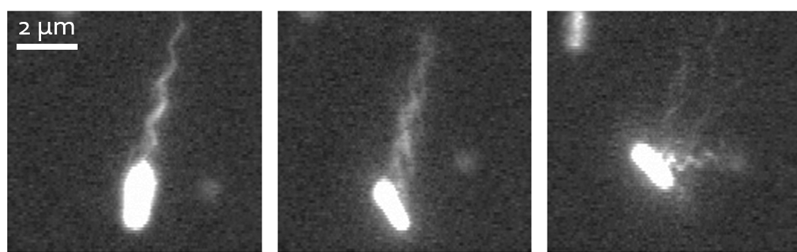 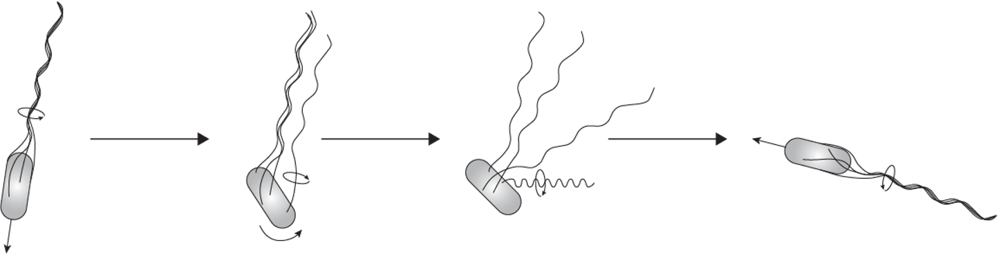
Turner et al., J. Bacteriol., 2000
A nanoscale motor powers flagellar rotation


Changes in the rotor enable bidirectional rotation
Torque production differs between CCW and CW
Automatic gearshift in cars allows the engine to adapt to changing terrains


Automatic gearshift in E. coli allows the motor to adapt to changing loads
What is the physical and molecular mechanism underlying this automatic gearshift?
How can we change motor load?
Instantaneously
Reversibly
Controllably
Electrorotation allows full control on motor load

Instantaneous
Reversible
Controllable
Electrorotation allows full control on motor load

A change in load triggers stepwise changes in motor speed
 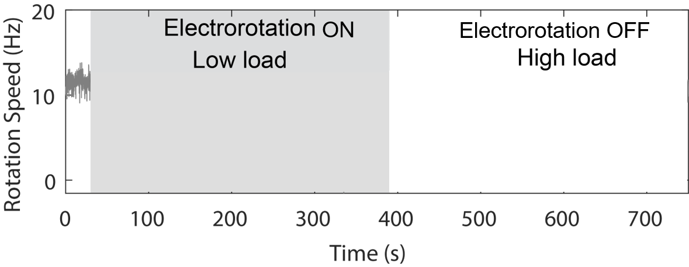
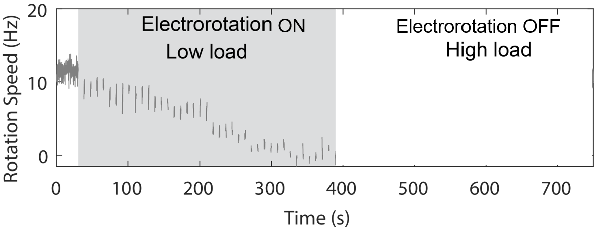
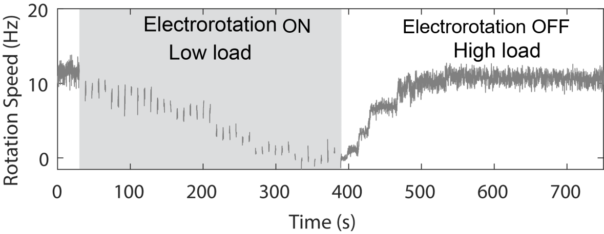
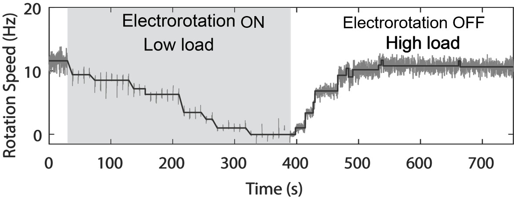
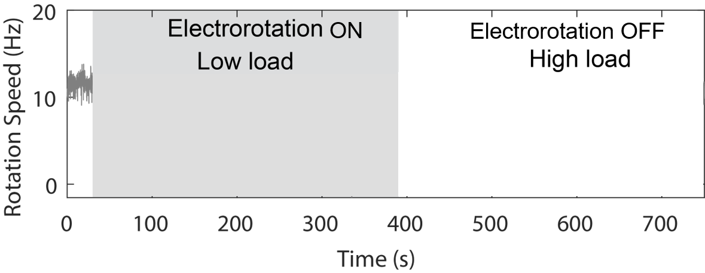
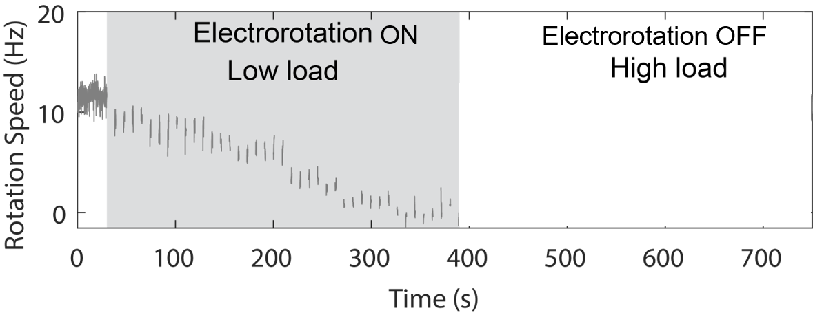
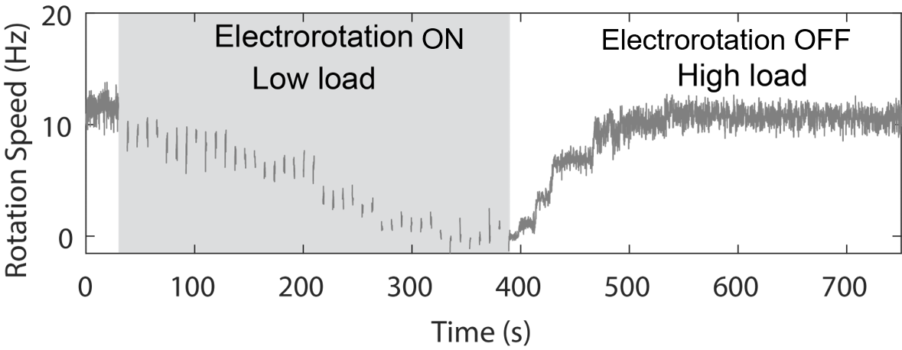
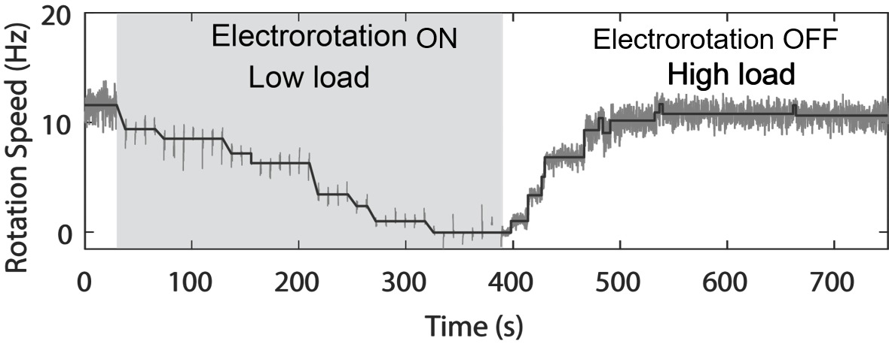

The stator remodels in response to load change
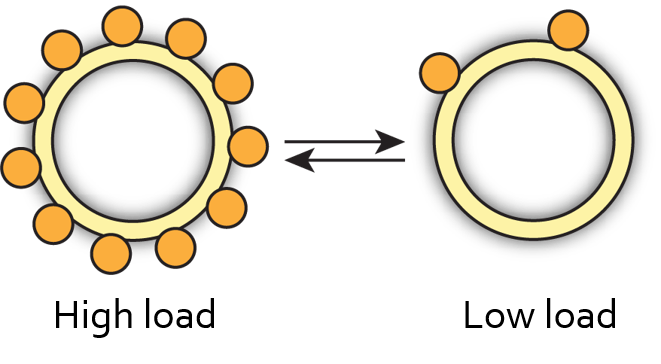
Wadhwa et al., PNAS, 2019
Lele et al., PNAS, 2013
Nord et al., PNAS, 2017
Remodeling kinetics vary with electrorotation speed
 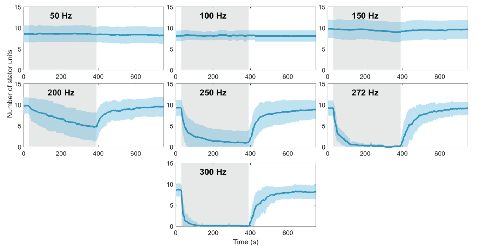
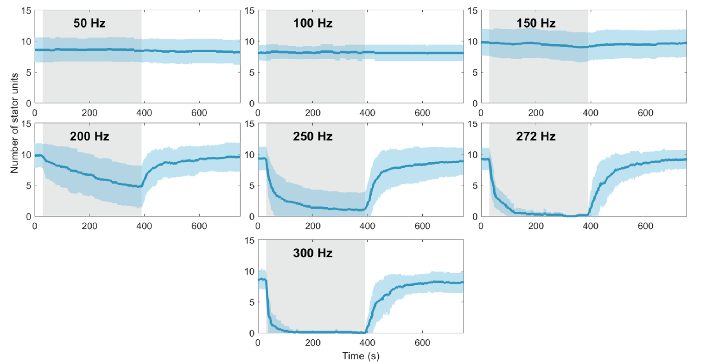
Remodeling kinetics vary with electrorotation speed
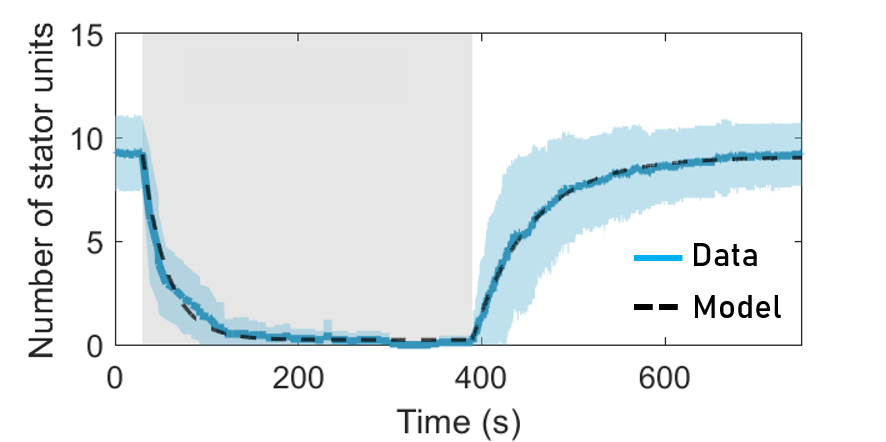
We extracted the on rate ($k_+$) and the off rate ($k_-$) from the data
Off-rate decreases with torque
The binding gets stronger at higher torque
A passive, biophysical mechanism of mechano-adaptation
Mechanosensitive remodeling is independent of the direction of rotation
Torque is the main parameter that governs stator remodeling
Wadhwa et al., BioRxiv, 2021
Chen and Berg, Biophys. J., 2000
Yuan et al., PNAS, 2010
Cars and bacteria use different approaches

Cars adapt the transmission while bacteria adapt the engine itself
Take home
Bacterial motors adapt to changing loads by remodeling themselves.
Torque governs motor remodeling by tuning the binding kinetics.
Molecular machines are not static, fixed structures, but flexible, dynamic, and responsive.
References:
Wadhwa, Phillips, and Berg, 2019,
PNAS 116: 11764-11769
Wadhwa, Tu, and Berg, 2021,
bioRxiv 2021.01.19.427295
Acknowledgements
Collaborators
Howard Berg (Harvard)
Yuhai Tu (IBM)
Rob Phillips (Caltech)
Ethan Garner (Harvard)
Nicholas Taylor (U. Copenhagen)
Marc Erhardt (Humboldt U.)
K99/R00: GM134124